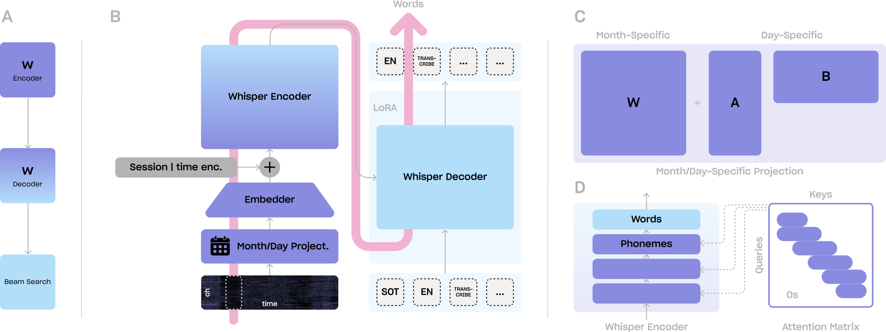

If you've landed on this page, you've probably already heard a bit about BrainWhisperer—our new brain-to-text
model—and you might be wondering how its end-to-end decoding skills translate into real-world applications.
That's exactly what this demo is here to show you!
In the panel below, you can pick from a few sample trials taken from the dataset released with (Card et al.,
2024)—neural recordings captured via Utah arrays while a patient with dysarthria attempts to articulate a
sentence. We've used these recordings to simulate a continuous neural stream. Hit the play button, and you'll
see the simulation launch along with real-time neural decoding powered by BrainWhisperer. You'll be able to
compare the target sentence with what our model decodes live in a dedicated section of the interface. Keep in
mind that BrainWhisperer only ever sees the neural data available up to the current moment—the part to the left
of the vertical white bar, which marks the present time.
Feel free to explore BrainWhisperer's performance by trying out different trials, and check out the bottom of
the page for a deeper dive into how this demo works.

A. Our end-to-end decoding pipeline. B. BrainWhisperer's architecture.
C. Our proposed month/day-specific
projection. D. Windowed attention.
Our web app operates as follows. On the backend, a new neural frame is appended to the current signal buffer every 10ms—with recordings played back at an accelerated rate for demonstration purposes—and BrainWhisperer is run on the full accumulated signal every 500ms. Each inference produces an updated intermediate transcription, which replaces the previous one displayed in the frontend by modifying only the words that differ from the prior output. Both the neural stream and the intermediate transcriptions are transmitted to the frontend in real time. It's important to note that while BrainWhisperer is not inherently causal, it can be deployed in a causal fashion by feeding only the signal available up to the current time step—which is the only signal available in real-world applications—with no degradation in behavior, as the demo illustrates.
A primary motivation for end-to-end neural speech decoding is the elimination of external language models, whose memory requirements—currently up to 300GB of RAM in the most competitive cascaded systems—preclude local inference and real-world deployment at scale. BrainWhispererwas designed with these constraints in mind: in inference mode it requires less than 2GB of VRAM and produces a transcription in under 100ms on a single H100 GPU with no optimizations (vanilla PyTorch, no quantization).